Caméras géographiques identiques (position, altitude absolue IGN69, orientation), éclairage figé. Les 2 500 arbres, leurs matrices et les 318 blocs de géométrie sont identiques octet pour octet. Les détails se chargent désormais progressivement. Les différences de quelques pixels sont quantifiées dans le rapport ; les décorations restent procédurales.
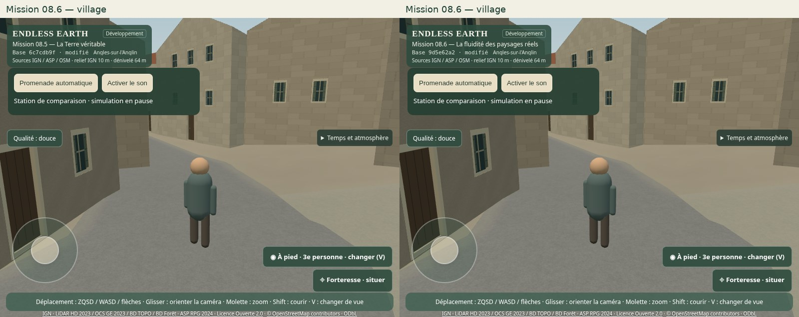
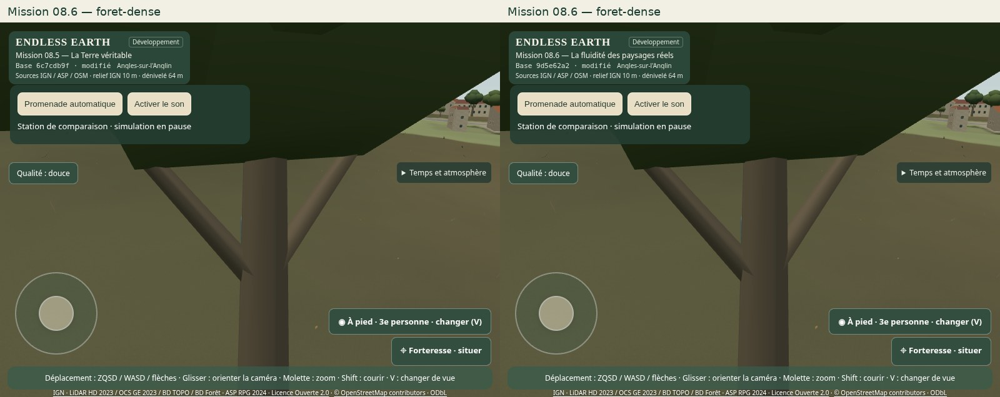
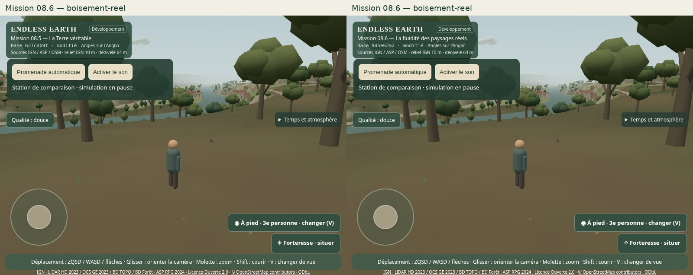
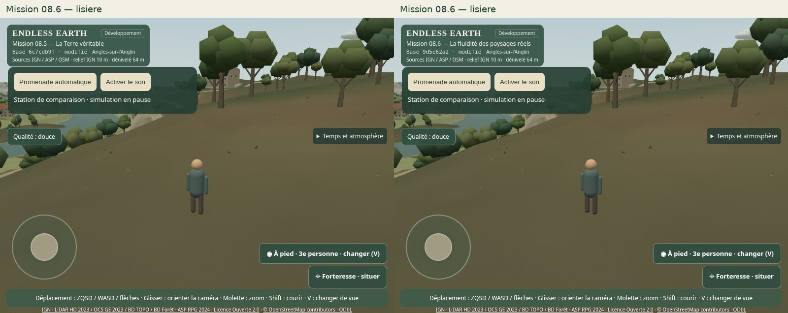
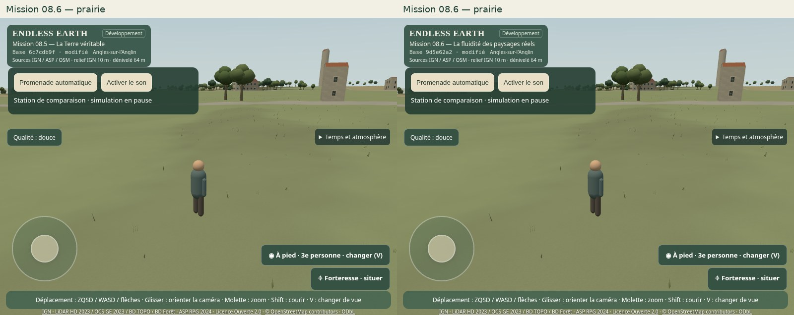
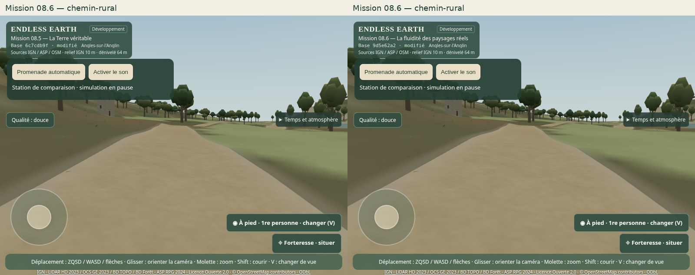
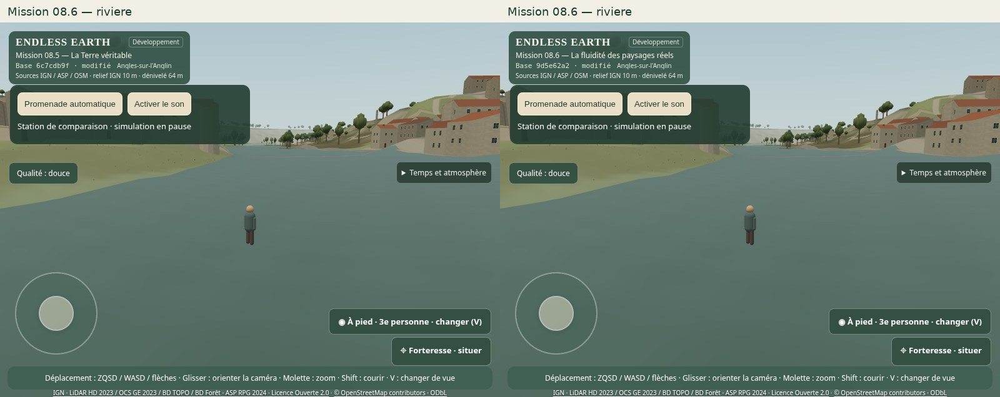
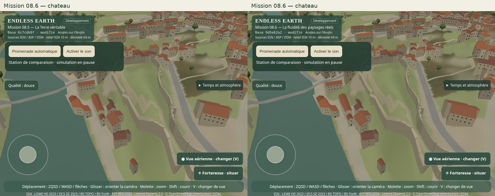
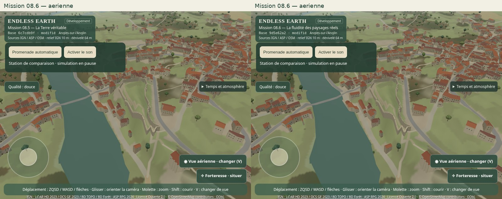
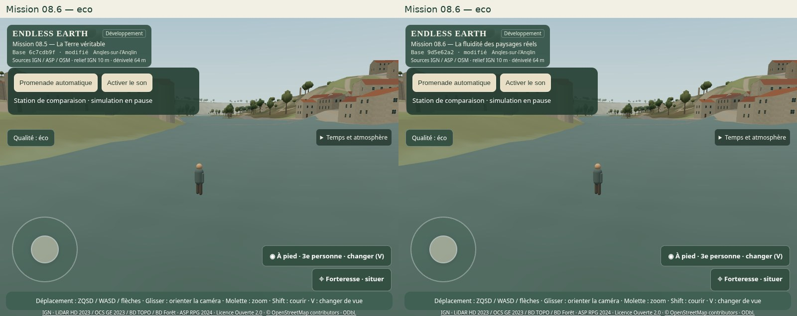
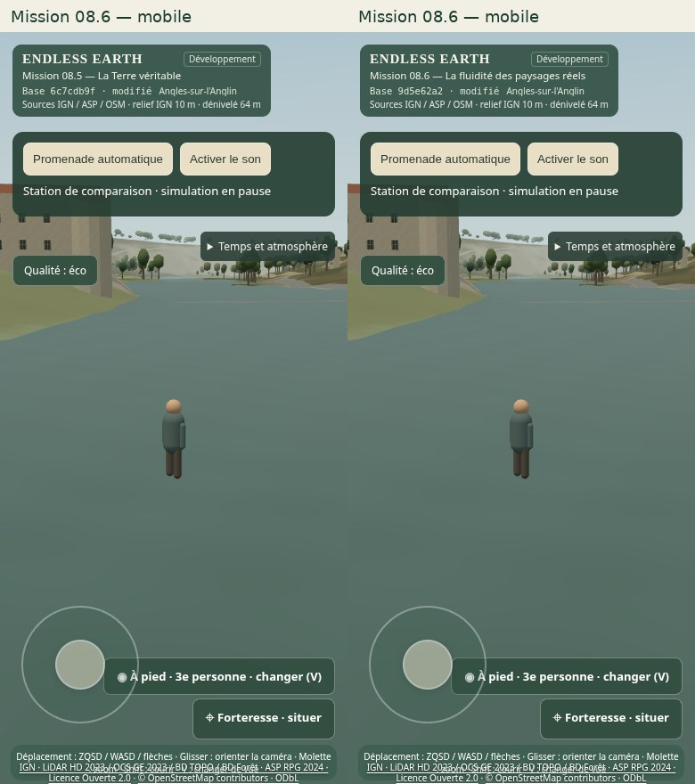